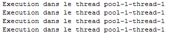
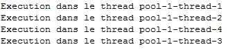
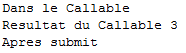

Tout d'abord, sachez que la programmation concurrente est un sujet très vaste et souvent complexe, rempli de pièges et de comportements tous plus étranges les uns que les autres :diable: .
Dans son big-tuto, Cysboy a introduit les threads et a illustré leur complexité. Je ne vais pas aborder ici les moyens d'assurer la thread-safety (le fait qu'un objet se comporte correctement quand plusieurs threads y accèdent), cela fera peut-être l'objet d'un futur tutoriel. Pour en revenir aux threads, JAVA 5 a introduit un nouveau moyen d'exécuter les tâches en parallèles : le framework Executor.
Je ne vais pas vous l'expliquer en intégralité, mais vous devriez être à même d'en comprendre les grandes lignes.
Sans plus attendre amis zéros, voyons ce que nous réserve le framework Executor.
Les threads sont omniprésents dans les programmes java. Votre JVM (Java Virtual Machine), qui se charge d'exécuter votre programme, va créer des threads à votre insu : les threads qui s'occupent des opérations de nettoyage de la mémoire et le thread d'exécution principal de votre programme. Je profite également de ce court rappel sur les threads pour préciser certaines choses :
L'ordre d'exécution des threads n'est pas garanti. J'entends par là que, à code équivalent, l'ordre d'éxecution des threads peut changer.
Je vois souvent les débutants se poser des questions quand à l'utilité de l'encapsulation ou l'utilisation du mot-clé final dans le code. Je ne vous dirai que ceci : l'encapsulation et les objets immuables sont vos meilleurs alliés pour vous en sortir dans un environnement multi-threads en java (ceci étant un tuto sur java je n'élargirais pas le débat à d'autres langages). Je vous précise au passage que l'encapsulation n'a que très rarement un impact sur les performances mais c'est un autre débat.
Je ne doute pas une seule seconde que les threads n'ont absolument aucun secret pour vous mais juste pour vous rafraichir la mémoire, généralement on créé un thread de cette façon :
On implémente l'interface java.lang.Runnable
public class MonRunnable implements Runnable {
@Override
public void run(){
System.out.println("Travail à effectuer");
}
}
et on l'enveloppe dans un thread :
public class Main {
public static void main(String[] args){
//On créer notre thread avec notre tache à executer
Thread t = new Thread(new MonRunnable());
//On lance le thread
t.start();
}
}
Nous sommes en 2004, Java 5 (Tiger) viens de sortir. Comme toutes les versions, celle-ci apporte sont lots de nouveautés dont l'auto-boxing, auto-unboxing, les génériques et la nouvelle API de concurrence. Désignée sous le doux nom de JSR 166 (http://www.jcp.org/en/jsr/detail?id=166) et conçu sous la direction (il n'était pas le seul bien sur) de Doug Lea, enseignant à l'université d'état d'Oswego aux Etats-Unis, cette JSR introduit, entre autres choses, un nouveau framework d'éxecution des tâches connu sous le nom de Framework Executor. 6 ans plus tard, Executor semble peu connu voir totalement ignoré dans le programme des universités.
L'idée d'Executor et des autres outils présents dans le package java.util.concurrent, est de pouvoir choisir facilement la politique d'exécution de nos tâches.
Qu'est-ce qu'une politique d'exécution ? Et bien c'est relativement simple. La politique d'exécution répond globalement à 3 questions :
Quelles tâches vont être exécutées ?
Dans quel ordre ?
Combien de ses tâches peut on exécuter en parallèle ?
Avant Java 5, c'était aux développeurs d’implémenter les classes nécessaire à la politique qu'ils souhaitaient mettre en place (Files d'exécutions, pool de threads...).
Ceci étant dit, explorons Executor. :pirate:
Les base du framework Executor
Autant le dire tout de suite : vous ne manipulez plus les threads directement !
L'abstraction de base que vous allez utiliser est l'interface Executor.
public interface Executor {
void execute(Runnable command);
}
J'aimerais ici faire un petit aparté sur les interfaces. Comme l'a très bien expliqué Cysboy dans son tutoriel les interfaces permettent de créer des super-types et donc de permettre un polymorphisme. De ces deux choses découlent le principal intérêt des interfaces, le découplage.
Je m'explique : Une interface A décrit un certain nombres d'opérations
public interface A {
void methodeA();
void methodeB();
}
On veut, qelle que soit la classe qui implémente A, faire un traitement particulier. Vous pouvez sans problème écrire une méthode qui prend en paramètre une interface, car vous savez quelles méthodes seront implémentées dans les classes qui implémentent votre interface. Si la classe qui implémente l'interface A change (pour une autre classe d'implémentation plus adaptée par exemple), la méthode execute (voir exemple ci-après) n'aura pas besoin d'être changée. C'est la raison pour laquelle on utilise des interfaces.
public class Execution {
public void execute(A a) {
a.methodeA();
a.methodeB();
}
}
Créer un framework basé sur les interfaces permet donc une grande souplesse dans l'exécution des tâches. Vous pourrez exécuter n'importe quelle tâche qui implémentent Runnable.
Comme dit précédemment, les executors exécutent tout comme les threads, des Runnables. Nous allons reprendre l'exemple précédent en utilisant Executor cette fois :
Au lieu de créer un thread avec new Thread(...), nous allons utiliser Executor qui fournit une méthode pour produire le même effet : la méthode newSingleThreadExecutor().
public class Main {
public static void main(String[] args) {
Executor executor = Executors.newSingleThreadExecutor();
executor.execute(new MonRunnable());
}
}
Il y a 3 interfaces à connaitre :
Executor : Pour l'exécution des "Runnables"
ExecutorService : Pour l'exécution des tâches "Runnables" et "Callables"(les Callables seront expliqués par la suite)
ScheduledExecutorService : Pour l'exécution des tâches périodiques (qui se répète dans le temps) et différée (la tâche doit commencer dans 60 secondes par exemple)
La relation entre ces interfaces est la suivante :
Cependant vous le savez, on n'instancie pas une interface. Pour créer les bons objets nous allons nous en remettre à une seule classe : Executors. Notez bien Executors; C'est une classe qui contient toutes les méthodes statiques nécessaire à la création d'objets du framework Executor.
Dans l'exemple précédent j'ai utilisé cette classe :
public class Main {
public static void main(String[] args) {
Executor executor = Executors.newSingleThreadExecutor();
executor.execute(new MonRunnable());
}
}
La méthode newSingleThreadExecutor(); renvoie un executor mono-thread. Je vous rappelle que vous ne manipulez pas les threads directement.
Executor contient plusieurs fabriques qui ne renvoient que des executors mono-thread :
Executors.newSingleThreadScheduledExecutor() : Executor mono-thread pour les tâches périodiques
Nous verrons les autres méthodes par la suite.
Exemple
Précedemment je vous ai montré le newSingleThreadExecutor() donc je vais vous montrer le newSingleThreadScheduledExecutor().
Ceci étant dit, sans plus attendre voici un exemple de tâche exécuté toutes les secondes.
public class Main {
public static void main(String[] args){
ScheduledExecutorService execute = Executors.newSingleThreadScheduledExecutor();
//Execute MonRunnable toutes les secondes
execute.scheduleAtFixedRate(new MonRunnable(), 0, 1, TimeUnit.SECONDS);
}
}
L’énumération TimeUnit apporte une plus grande clarté au code. Cela évite d'avoir à écrire le temps en milli-secondes, ce qui est illisible arrivé à un certain point.
Bon les exécutions mono-thread c'est bien gentil mais je ne veux pas attendre qu'une tâche se termine avant de faire la suivante moi ! Il est où le parallélisme sinon ...
Merci de poser la question :lol:
Comme vous avez sans doute pu le voir si vous développez dans un IDE (hé oui dans le bloc note il n'y a pas d'auto-complétion), la classe Executors possède des méthodes aux noms un peu étrange : newFixedThreadPool(), newScheduledThreadPool(), newCachedThreadPool()...
Si vous ne savez pas ce qu'est un pool d'objets, et bien pour simplifier disons que c'est une collection d'objets créés et initialisés puis mis en mémoire. On les utilise quand le coût de création et d'initialisation d'un objet est assez important. Le fait de mettre certains objets en mémoire peut augmenter les performances dans certain cas mais je ne vais pas rentrer dans les détails de la performance en java.
Les tailles des pools de threads ne sont pratiquement jamais codées en dur. La taille des pools dépend en effet des ressources. Passer de 3 à 100 processeurs n'est pas négligeable et le programme doit prendre en compte ces changements.
Il existe une méthode pour récupérer dynamiquement le nombre de processeurs disponibles:
int proc = Runtime.getRuntime().availableProcessors();
Bref, revenons à notre Executors.
Le but ici est de ne pas utiliser le même thread pour toutes les tâches mais d'utiliser un thread différent pour chacune. Donc il n'y a plus besoin d'attendre qu'une tâche soit finie pour exécuter la suivante. Allons-y pas à pas, nous allons commencer par modifier la classe MonRunnable pour observer dans quel thread on se trouve.
La nouvelle classe Runnable :
public class MonRunnable implements Runnable {
@Override
public void run() {
try {
//On simule un traitement long en mettant en pause le Thread pendant 4 secondes
Thread.sleep(4000);
//On affiche le nom du thread où on se trouve
System.out.println("Execution dans le thread " + Thread.currentThread().getName());
}
catch (InterruptedException e) {
e.printStackTrace();
}
}
}
Nous allons tout d'abord l'exécuter en mono-thread, c'est à dire un thread pour toutes nos tâches.
public class Main {
public static void main(String[] args) {
//La liste qui va stocker les taches à effectuer
List<Runnable> runnables = new ArrayList<Runnable>();
//On créer 4 taches (instance de MonRunnable)
runnables.add(new MonRunnable());
runnables.add(new MonRunnable());
runnables.add(new MonRunnable());
runnables.add(new MonRunnable());
//Notre executor mono-thread
ExecutorService execute = Executors.newSingleThreadExecutor();
//La méthode qui se charge de l'exécution des tâches
executeRunnables(execute, runnables);
}
public static void executeRunnables(final ExecutorService service, List<Runnable> runnables){
for(Runnable r : runnables){
service.execute(r);
}
//On ferme l'executor une fois les taches finies
//En effet shutdown va attendre la fin d'exécution des tâches
service.shutdown();
}
}
Résultat à l'exécution:

Modifions le code pour utiliser un pool de threads : chaque thread est lancé en parallèle et exécute la tâche qui lui est dédiée. (j'ai commenté le code pour que vous compreniez).
public class Main {
public static void main(String[] args){
List<Runnable> runnables = new ArrayList<Runnable>();
runnables.add(new MonRunnable());
runnables.add(new MonRunnable());
runnables.add(new MonRunnable());
runnables.add(new MonRunnable());
//Cette fois on créer un pool de 10 threads maximum
ExecutorService execute = Executors.newFixedThreadPool(10);
executeRunnables(execute, runnables);
}
public static void executeRunnables(final ExecutorService service, List<Runnable> runnables){
//On exécute chaque "Runnable" de la liste "runnables"
for(Runnable r : runnables){
service.execute(r);
}
service.shutdown();
}
}
Résultat à l'exécution :

Executor facilite grandement l'exécution de tâches en parallèles.
Un exemple un peu plus parlant
Les pools de threads sont généralement utilisés pour exécuter des tâches homogènes et indépendantes. Les serveurs qui traitent des requêtes sont un excellent exemple d'utilisation. Les clients qui se connectent au serveur sont indépendants et le traitement est toujours le même.
Je vous renvoie au cours de SoftDeath "Introduction aux sockets", pour bien comprendre cet exemple.
Nous allons donc mettre en place un simple serveur multi-threads qui va traiter les connexions entrantes dans un thread différent. Mais au lieu de créer un thread manuellement à chaque connexion et donc gérer son cycle de vie manuellement, nous allons utiliser un pool de threads qui va faire une taille bien définie pour être sur de contrôler le nombre de threads créés.
public class ServerLauncher
{
public static void main(String[] args){
//On se sert d'un pool de thread pour limiter le nombre de threads
//en mémoire
final ExecutorService service = Executors.newFixedThreadPool(100);
ServerSocket serverSocket = null;
try {
serverSocket = new ServerSocket(10000);
int i = 0;
while (true) {
try {
final Socket socket = serverSocket.accept();
//On traite la requète via notre executor
service.execute(new Runnable(){
@Override
public void run() {
traitementRequete(socket);
}
});
}
catch (IOException e) {
e.printStackTrace();
}
}
}
catch (IOException e) {
e.printStackTrace();
}
finally {
try {
serverSocket.close();
}
catch (IOException e) {
e.printStackTrace();
}
}
}
}
Le traitement des requêtes dans un pool permet de contrôler le nombre de threads créés. La création illimitée de threads est toujours dangereuse.
Maintenant que vous savez comment exécuter des tâches j'aimerais attirer votre attention sur l'interface java.lang.Runnable. Pour rappel voici l'interface Runnable :
public interface Runnable {
public void run();
}
Cette interface souffre de deux limitations:
La méthode run() ne peut renvoyer aucune valeur(void)
Vous ne pouvez lancer aucune exception
Pour pallier à ces deux problèmes, une nouvelle interface a été développée: Callable<V> (java.util.concurrent.Callable)
public interface Callable<V> {
public V call() throws Exception;
}
Vous pouvez ainsi renvoyer le résultat d'un calcul qui s'est déroulé dans la fonction call() sans avoir à créer une variable globale, ou à passer en paramètre un objet pour stocker le résultat.
L'exemple suivant est effectivement inutile, mais illustre bien l'implémentation de Callable<V>.
public class MonCallable implements Callable<Integer> {
@Override
public Integer call() throws Exception {
try {
Thread.sleep(4000);
//Traitement....
System.out.println("Dans le Callable");
}
catch(InterruptedException e){
throw new Exception("Thread interrompu ; cause " + e.getMessage());
}
return 3;//On peut retourner une valeur
}
}
De la même manière que les "Runnables", vous pouvez utiliser les Executors pour soumettre des Callables. Cependant, nous n'utiliserons pas la méthode EXECUTE mais SUBMIT.
public class Main {
public static void main(String[] args) {
ExecutorService execute = Executors.newSingleThreadExecutor();
execute.submit(new MonCallable());
System.out.println("Apres submit");
execute.shutdown();
}
}
Je veux récupérer le résultat du Callable à un instant précis je fais comment ? J'utilise la méthode join() des threads, c'est ça ?
Heureusement que vous êtes la pour posez les questions :lol: Et bien non en fait, la methode submit(Callable<V> callable); renvoie un objet Future<V>.
Qu'est-ce-que c'est que ce truc ?? o_O
Un Future<V> représente le cycle de vie d'une tâche. Future<V> est bien sûr une interface et submit renvoie un objet qui implémente cette interface; En l’occurrence FutureTask. Rien que pour vous zéros, voici l'interface Future<V> :
public interface Future<V> {
boolean cancel(boolean mayInterruptIfRunning);
boolean isCancelled();
boolean isDone();
V get() throws InterruptedException, ExecutionException,
CancellationException;
V get(long timeout, TimeUnit unit) throws InterruptedException, ExecutionException,
CancellationException, TimeoutException;
}
Revenons à ma votre question. Future<V> possède une méthode bien pratique get() qui permet de récupérer le résultat enveloppé dans l'objet FutureTask. On s'en sert de la façon suivante :
public class Main {
public static void main(String[] args) {
ExecutorService execute = Executors.newSingleThreadExecutor();
//On récupère un objet Future<V>
Future<Integer> future = execute.submit(new MonCallable());
try {
//future.get() est bloquant, l'exécution attend le resultat
//et on l'affiche dans la console.
System.out.println("Resultat du Callable " + future.get());
}
catch (InterruptedException e) {
e.printStackTrace();
}
catch (ExecutionException e) {
e.printStackTrace();
}
System.out.println("Apres submit");
execute.shutdown();
}
}
Résultat de l'exécution :

Callable est une abstraction bien supérieure à Runnable. Outre le fait de pouvoir renvoyer des résultats qui ne nous sert parfois à rien, le fait de pouvoir lever des exceptions n'est pas à prendre à la légère.
En matière d'architecture logicielle on en apprend tous les jours. Les experts de la JSR 166 nous apportent des solutions efficaces ce qui nous évitent de chercher des solutions à des problèmes complexes. Comprenez moi bien, je ne vous empêche pas d'implémenter vos propres solutions et je vous encourage à comprendre et à réfléchir à de nouvelles possibilités, mais pour le bien de votre application utilisez plutôt celles présentes dans le JDK. Pour les applications concurrentes les solutions ne manquent pas comme le service de terminaison.
Le service de terminaison
Un service de terminaison répond à la problématique suivante : Comment récupérer les résultats d'un grand nombre de tâches correctement et quand ils sont disponibles ? En réalité il y a plusieurs façon, plus ou moins bonnes, de le faire mais Executor nous en fournit une très efficace : CompletionService. CompletionService utilise les files, c'est à dire le modèle producteurs-consommateurs. C'est un modèle assez simple, les producteurs créent les tâches et les soumettent à une file, les consommateurs retirent la première tâche et l'exécute libérant ainsi une nouvelle place dans la file pour une tâche future. CompletionService permet de récupérer un résultat dès qu'il est disponible, on obtient alors une meilleure réactivité de l'application.
CompletionService est une interface et sa classe d'implémentation, présente dans le JDK et que nous allons utiliser ici, est ExecutorCompletionService.
L'approche est la suivante:
Nous allons récupérer une liste de tâches à exécuter et nous allons traiter les résultats quand ceux-ci sont disponibles. Dans un premier temps, il faut créer les tâches qui vont être exécutées. Pour simuler un calcul long, nous allons utiliser Thread.sleep(), la tâche prendra en paramètres un entier qui correspondra au nombre de secondes pendant lesquelles le thread sera "endormi".
public class Task implements Callable<Integer> {
private final int sleepTime;
public Task(int n) {
sleepTime = n;
}
@Override
public Integer call() throws Exception {
Thread.sleep(1000 * sleepTime);
return sleepTime;
}
}
Vous pouvez imaginer que dans la fonction call() se trouve en réalité un calcul très important qui va prendre plus ou moins de temps en fonction de l'entier passé en paramètre. A présent que notre classe représentant une tâche est déclarée, nous allons créer plusieurs de ces tâches puis les exécuter.
public class TestTask {
public static void main(String[] args) {
//Notre liste qui va contenir toutes les tâches
List<Callable<Integer>> taches = new ArrayList<Callable<Integer>>();
//On créé 4 tâches avec un paramètre pour le
//Thread.sleep() différent.
Callable<Integer> tache1 = new Task(1);
Callable<Integer> tache2 = new Task(5);
Callable<Integer> tache3 = new Task(10);
Callable<Integer> tache4 = new Task(2);
//On ajoute ces taches à la liste
taches.add(tache1);
taches.add(tache2);
taches.add(tache3);
taches.add(tache4);
//On instancie un executor contenant 10 threads pour pouvoir
//exécuter nos actions en parallèles
ExecutorService executor = Executors.newFixedThreadPool(10);
}
}
Jusque là rien de nouveau. Si cela vous parait flou, revenez en arrière dans le tutoriel avant de continuer. Nous avons donc nos tâches et notre executor qui va traiter ces tâches. C'est ici que nous allons introduire notre service de terminaison : ExecutorCompletionService. Le constructeur de cette classe est très simple : il prend en paramètre un Executor.
//Le type entre les chevrons dépend du type de vos Callables.
//Si vous avez créé des Callable<String> alors vous instancierez un
//CompletionService<String>.
CompletionService<Integer> completionService = new ExecutorCompletionService<Integer>(executor);
Nous allons déclarer une méthode résoudre qui va se charger d'exécuter les tâches à travers notre service de terminaison. Pour l'instant, votre méthode devrait ressembler à ça:
public static void main(String[] args) {
List<Callable<Integer>> taches = new ArrayList<Callable<Integer>>();
Callable<Integer> tache1 = new Task(1);
Callable<Integer> tache2 = new Task(5);
Callable<Integer> tache3 = new Task(10);
Callable<Integer> tache4 = new Task(2);
taches.add(tache1);
taches.add(tache2);
taches.add(tache3);
taches.add(tache4);
ExecutorService executor = Executors.newFixedThreadPool(10);
resoudre(executor, taches);
}
public static void resoudre(final ExecutorService executor, List<Callable<Integer>> taches) {
//Le service de terminaison
CompletionService<Integer> completionService = new ExecutorCompletionService<Integer>(executor);
}
}
Le service de terminaison contient plusieurs méthodes, mais nous n'allons en utiliser que deux. La première SUBMIT, qui comme vous l'aurez sûrement deviné, prend en paramètre un Callable<V> et va lancer votre tâche. La seconde est TAKE. La méthode take() va en fait vous permettre d'attendre qu'un résultat soit prêt pour l'utiliser. En d'autres mots, quand une tâche s'achève, son résultat est mis dans une file d'attente. La méthode take() va récupérer le premier résultat disponible dans cette file, puis va le supprimer. Ainsi un nouvel appel à take() vous renverra le résultat suivant.
Si vous vous souvenez bien, la méthode submit d'un executor renvoie un Future<V>. Et bien celle de CompletionService fait de même.
Commençons par le submit :
//une liste de Future pour récupérer les résultats
List<Future<Integer>> futures = new ArrayList<Future<Integer>>();
Integer res = null;
try
{
//On soumet toutes les tâches à l'executor
for(Callable<Integer> t : taches){
futures.add(completionService.submit(t));
}
}
catch(Exception e){}
De cette façon toutes les tâches sont lancées dans l'executor via notre service de terminaison. Maintenant se pose le problème de la récupération des résultats quand ceux-ci sont disponibles. La première approche consiste à faire une boucle sur la liste de Future<V> et en utilisant la méthode get() récupérer le résultat. Cela fonctionne, mais vous ne récupérez pas le résultat au moment où il est disponible. Votre appel à get() va attendre le résultat du Future<V> en cours mais d'autres tâches pourront être terminées pendant ce temps. Le service de terminaison règle cette question. Comme dit précédemment, à l'aide de take() vous récupérerez le premier résultat disponible.
for (int i = 0; i < taches.size(); ++i)
{
try {
//On récupère le premier résultat disponible
//sous la forme d'un Future avec take(). Puis l'appel
//à get() nous donne le résultat du Callable.
res = completionService.take().get();
if (res != null) {
//On affiche le résultat de la tâche
System.out.println(res);
}
}
catch(ExecutionException ignore) {}
}
Je vous remet le code global pour ceux qui auraient un peu de mal ;)
public class TestTask {
public static void main(String[] args) {
List<Callable<Integer>> taches = new ArrayList<Callable<Integer>>();
Callable<Integer> tache1 = new Task(1);
Callable<Integer> tache2 = new Task(5);
Callable<Integer> tache3 = new Task(10);
Callable<Integer> tache4 = new Task(2);
taches.add(tache1);
taches.add(tache2);
taches.add(tache3);
taches.add(tache4);
ExecutorService executor = Executors.newFixedThreadPool(10);
resoudre(executor, taches);
}
public static void resoudre(final ExecutorService executor, List<Callable<Integer>> taches){
//Le service de terminaison
CompletionService<Integer> completionService = new ExecutorCompletionService<Integer>(executor);
//une liste de Future pour récupérer les résultats
List<Future<Integer>> futures = new ArrayList<Future<Integer>>();
Integer res = null;
try {
//On soumet toutes les tâches à l'executor
for(Callable<Integer> t : taches){
futures.add(completionService.submit(t));
}
for (int i = 0; i < taches.size(); ++i) {
try {
//On récupère le premier résultat disponible
//sous la forme d'un Future avec take(). Puis l'appel
//à get() nous donne le résultat du Callable.
res = completionService.take().get();
if (res != null) {
//On affiche le resultat de la tâche
System.out.println(res);
}
}
catch(ExecutionException ignore) {}
}
}
catch(Exception e){
e.printStackTrace();
}
finally {
executor.shutdown();
}
}
}
Vous devriez voir affichez les tâches dès quelles sont terminées. (C'est à dire à l'affichage "1" "2" "5" "10")
Ce genre de méthode est très efficace et faire la même chose avec des threads nécessite une certaine maitrise. Mais les outils existent, alors autant s'en servir.
Le framework Executor permet de s'affranchir avantageusement des threads et des Timers. Il nous permet aussi de disposer de pools de threads efficaces, ce genre d'implémentation n'étant pas vraiment à la portée des débutants. L'organisation des tâches dans un service de terminaison permet de manipuler avec une grande facilité les résultats de tâches exécutées en parallèles.
Mais t'as pas parleé des verrous et des classes thread-safe ?
Je sais, et pour une bonne raison. En effet en parlant de la thread-safety dans ce cours j'aurais été très long et vous seriez passé à coté du framework Executor.